Welcome to Chun-Le Guo (郭春乐)'s Homepage
Chun-Le Guo is an associate professor at Nankai University. Before that, he was a postdoc working with Prof. Ming-Ming Cheng at Nankai University. He received his Ph.D. degree from Tianjin University in China under the supervision of Prof. Ji-Chang Guo. He conducted the Ph.D. research as a Visiting Student with the School of Electronic Engineering and Computer Science, Queen Mary University of London (QMUL), UK. Then he continued his research as a Research Associate with the Department of Computer Science, City University of Hong Kong (CityU of HK).
郭春乐，南开大学副教授，博导，入选南开大学"百名青年学科带头人培养计划"，第十届中国科协青年托举计划，2023 OPEN100 开源贡献人才榜，2024、2025斯坦福全球前2%顶尖科学家榜，2024、2025爱思唯尔中国高被引学者。研究内容包括计算成像、图像增强与复原等。谷歌学术引用1.2万余次，其中一作单篇最高引用2700余次。主持国自然、天津市青年项目（B类）以及华为、三星等资助的项目。曾获山东计算机学会自然科学奖一等奖（第2完成人）、IEEE Signal Processing Society Best Paper Award等奖项。参与组织2022-2026年VALSE大会，现任VALSE EAC、IEEE Journal of Oceanic Engineering（SCI二区）编委、CVPR 2026领域主席。
Research interests lie in image processing, computer vision, and deep learning, particularly in:
- Image and video restoration and enhancement
- AI ISP, such as raw denoising
- MLLM image quality assessment
- Generative image restoration
- Multispectral color restoration
- Computational imaging
News
Selected Publications
Joint first authors are indicated using # and corresponding authors are indicated using *.
2026

DNF-SR: Dual-Input and Negative-Aware Feature Fine-Tuning for Real-World Image Super-Resolution
IEEE Conference on Computer Vision and Pattern Recognition (CVPR), 2026
Time-Aware One Step Diffusion Network for Real-World Image Super-Resolution
IEEE Conference on Computer Vision and Pattern Recognition (CVPR), 2026
YOSE: You Only Select Essential Tokens for Efficient DiT-based Video Object Removal
IEEE Conference on Computer Vision and Pattern Recognition (CVPR), 2026
Stand-In: A Lightweight and Plug-and-Play Identity Control for Video Generation
IEEE Conference on Computer Vision and Pattern Recognition (CVPR), 2026
VTinker: Guided Flow Upsampling and Texture Mapping for High-Resolution Video Frame Interpolation
AAAI Conference on Artificial Intelligence (AAAI), 2026
EvalMuse-40K: A Reliable and Fine-Grained Benchmark with Comprehensive Human Annotations for Text-to-Image Generation Model Evaluation
AAAI Conference on Artificial Intelligence (AAAI), 2026
PerTouch: VLM-Driven Agent for Personalized and Semantic Image Retouching
AAAI Conference on Artificial Intelligence (AAAI), 2026
2025
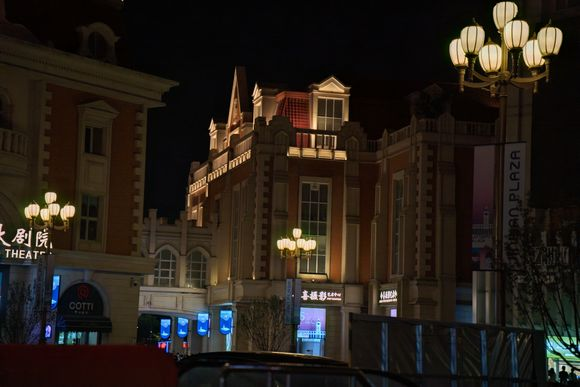
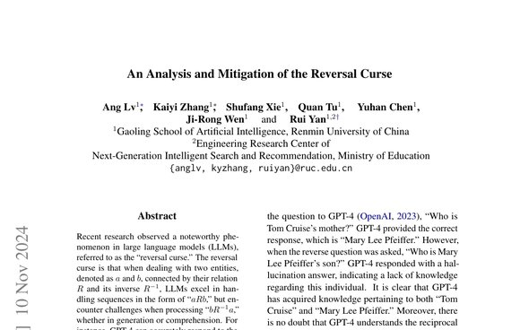
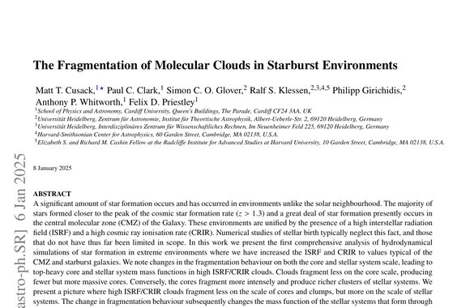
2024
LAMP: Learn A Motion Pattern for Few-Shot Video Generation
IEEE Conference on Computer Vision and Pattern Recognition (CVPR), 2024
2023
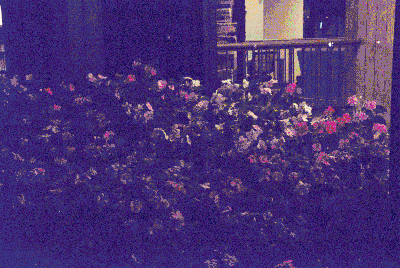
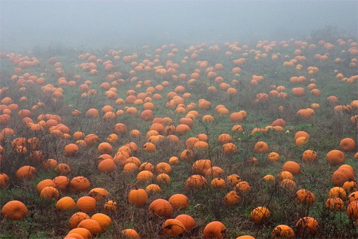
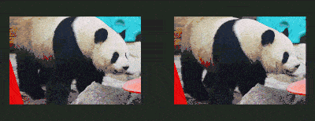
AMT: All-Pairs Multi-Field Transforms for Efficient Frame Interpolation
IEEE Conference on Computer Vision and Pattern Recognition (CVPR), 2023
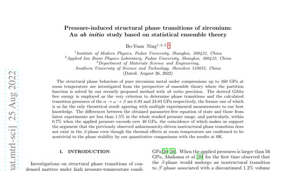
Underwater Ranker: Learn Which Is Better and How to Be Better
AAAI Conference on Artificial Intelligence (AAAI), 2023
2022
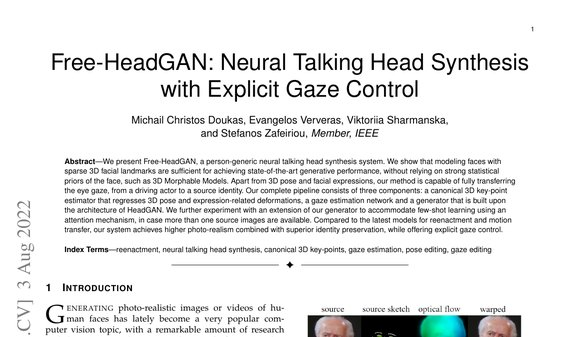
KnifeCut: Refining Thin Part Segmentation with Cutting Lines
Proceedings of the 30th ACM International Conference on Multimedia (ACM MM), 2022
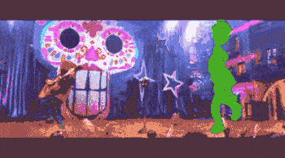
Towards An End-to-End Framework for Flow-Guided Video Inpainting
IEEE Conference on Computer Vision and Pattern Recognition (CVPR), 2022
2021
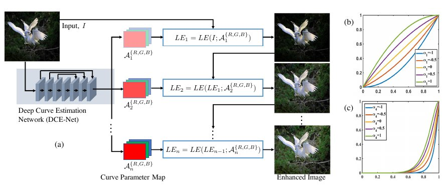
Learning to Enhance Low-Light Image via Zero-Reference Deep Curve Estimation
IEEE Transactions on Pattern Analysis and Machine Intelligence (TPAMI), 2021 ESI Highly Cited Paper & TPAMI Popular Articles
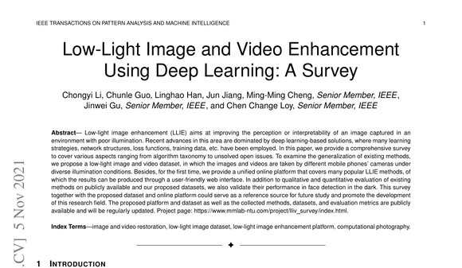
2020
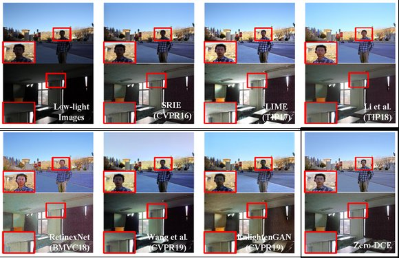
Zero-Reference Learning for Low-Light Image Enhancement
IEEE Conference on Computer Vision and Pattern Recognition (CVPR), 2020